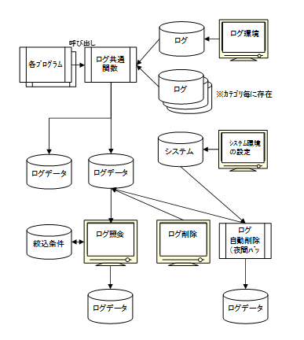

22. ログAPI¶
アプリケーションからデータベース上のテーブルにログを記録するためのログAPIが提供されます。
この章では、アドオンアプリケーションからログAPIを利用する方法について説明します。
22.1. ログ管理機能の概要¶

No |
処理名 |
処理内容 |
|---|---|---|
1 |
各プログラム |
ログ情報をログ共通関数に引き渡す |
2 |
ログ共通関数 |
・受け取ったログ情報をログデータに出力する ・ログ環境定義を参照し、カテゴリ毎の出力有無、出力先等を決定する。 ・ログフォーマット定義データをもとに、メッセージの編集を行う。 |
3 |
ログ環境設定 |
カテゴリ毎の出力有無、出力範囲、出力先を設定する |
4 |
システム環境の設定（ログ情報） |
ログ自動削除の設定等、ログに関する環境設定を行う。 |
5 |
ログ照会 |
・入力された検索条件に基づき、ログデータの照会を行う。 ・照会データを、CSVファイルへ出力可能。 ・定型的な検索条件の登録・編集が可能。 |
6 |
ログ削除 |
指定された条件のログデータを削除する。 |
7 |
ログ自動削除 |
夜間バッチで動作し、システム環境に設定された条件に基づきログデータの削除および削除データの保管を行う。 |
22.2. ログAPI利用のための準備¶
ログAPIを利用するための事前準備事項は以下のとおりです。
ログカテゴリの決定
ログを記録するためには、アプリケーションのためのログカテゴリを決定し、 ログ環境設定情報をPOWER EGGに登録する必要があります。
ログカテゴリは、アドオン規約に従って、先頭が”U”で始まる3文字の カテゴリコードにします。
なお、ログカテゴリ毎の設定は、システム管理メニューの「ログ環境設定」画面で行います。
メッセージコードの決定とメッセージ定義ファイルの作成
アプリケーションのログカテゴリを決定したら、記録するログメッセージ毎 のメッセージコード・メッセージ文字列を設計し、 メッセージ定義ファイルを作成します。
【メッセージコードの書式】
カテゴリコード + メッセージ番号 + ログ種類区分 + ログレベル
カテゴリコード |
英大文字３文字のカテゴリコード |
|---|---|
メッセージ番号 |
数字5桁のメッセージを識別するための連番 |
ログ種類区分 |
U:ユーザ操作、A:システム管理者操作、S:システム・API |
ログレベル |
I:情報レベル、W:警告レベル、E:エラーレベル |
例）COM00010UI
【メッセージ文字列】
メッセージ文字列は、java.text.MessageFormatで規定されている方法で設計します。
【メッセージ定義ファイル】
メッセージ定義ファイルは、javaのpropertiesファイル形式で作成します。
メッセージ内に日本語が含まれる場合、navive2asciiなどで変換しなければなりません。
ファイル名は、”カテゴリコード” + _MESSAGES_ja_JP.propertiesとします。
例）COM_MESSAGES_ja_JP.properties
作成したメッセージ定義ファイルは、アプリケーションサーバのクラスパスが設 定されているディレクトリ内に配置します。
22.3. アプリケーションからのログの記録¶
アプリケーションからログAPIでログを記録する際は、 net.poweregg.common.log.Loggerオブジェクトを取得し、 Loggerオブジェクトのlogメソッドを呼び出してログを記録します。
＜＜ログ書き込みコーディング例＞＞
public class Appli1 {
private Logger nnvlogger=LogFactory.getLogger(“NNV”); // <--①
public int login(HttpServletRequest request) {
// ログイン処理
Object[] logParameters = new Object[4];
logParameters[0] = “ooishi”;
logParameters[1] = “フレンド商事”;
logParameters[2]= “システム部”;
logParameters[3]=“係”;
nnvlogger.log(“NNV00010UI”, logParameters, request); // <--②
①... NNVカテゴリのロガーをファクトリから取得し、クラス変数に格納しておく
②... ログ編集に使用する可変パラメタを編集し、メッセージコードとともに、ログ書き込みメソッドを呼び出す。
注釈
log()メソッドには引数の異なる複数種類が存在
requestを受け取るもの
HttpRequestが利用可能な場所で利用
会社ID, 社員ID, IPアドレスを受け取るもの
HttpRequestを使えない場所で利用
プログラムを動作させる前に「ログカテゴリの設定」画面でログカテゴリを登録しておく必要があります。 ログカテゴリが登録されていない状態でプログラムを配備・動作させるとLogFactory.getLoggerの部分で エラーが発生し、アプリケーションの起動に失敗します。